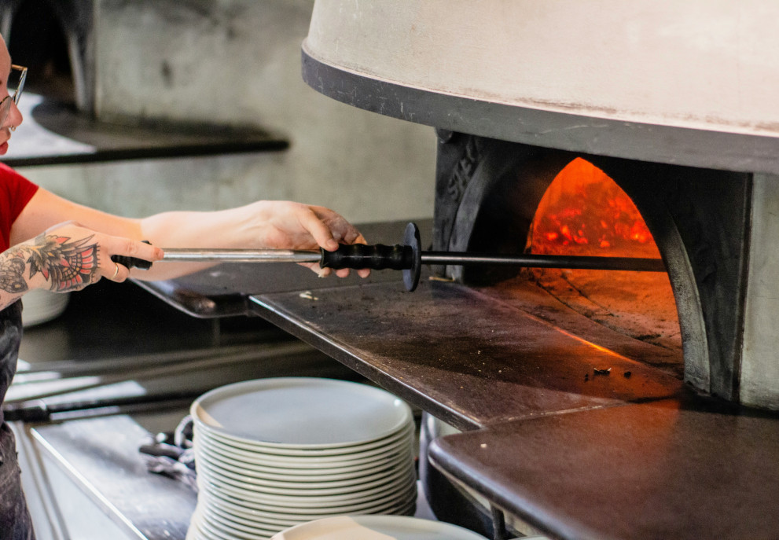

Quiénes somos
En 2024 nació Pizza ¡YAPA!, una pizzería que fusiona la pasión italiana con la magia de lo nuevo. Fundada por la visionaria chef Isabella Rossi, esta encantadora casa de pizzas combina sabores tradicionales con un toque contemporáneo. En Pizza ¡YAPA!, cada pizza es una obra de arte, desde la masa hecha a mano hasta los ingredientes frescos y cuidadosamente seleccionados. Inspirados por la tradición y guiados por la innovación, nuestro objetivo es llevar la auténtica experiencia italiana a cada cliente. Unite a nosotros en este viaje culinario donde el sabor se convierte en una aventura inolvidable.
